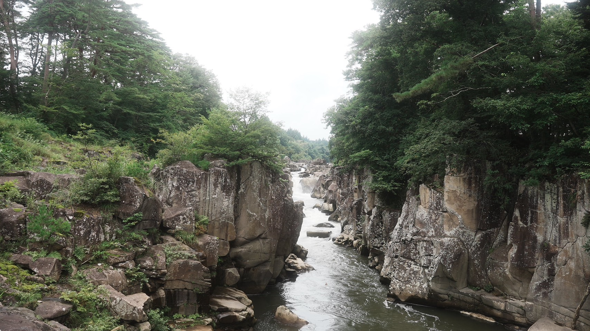
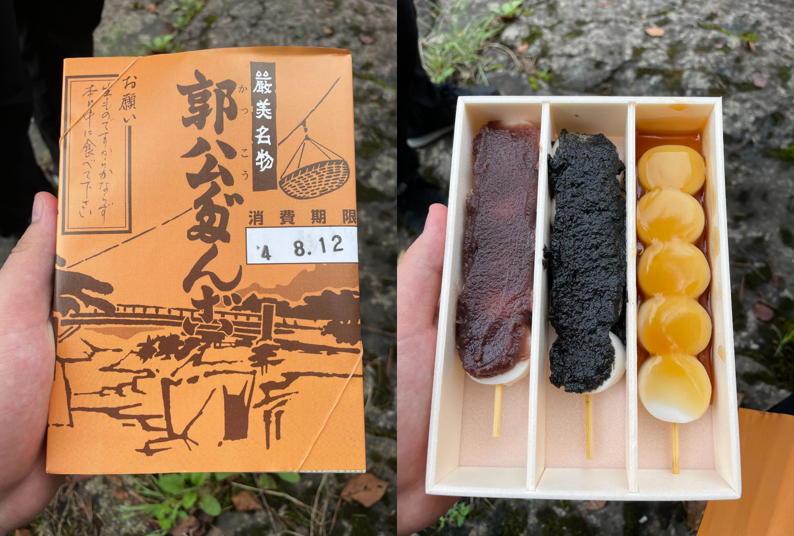
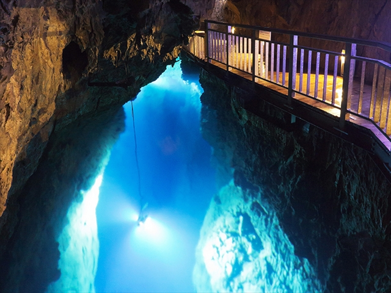
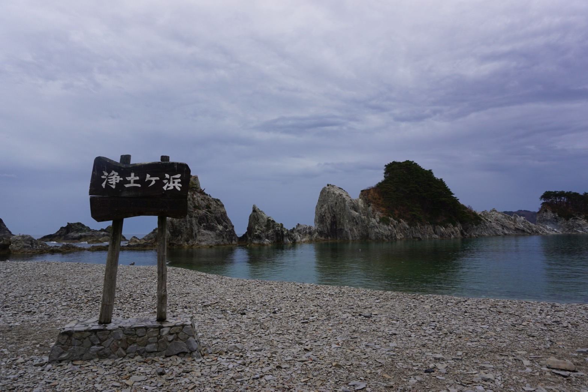

観光地紹介ページ
厳美渓

栗駒山から一関市内へと流れる磐井川の浸食により、ゆっくりと時間をかけて形成された国の名勝、天然記念物・厳美渓。
年間100万人以上が足を運ぶ、一関エリアを代表する来訪者数No.1の人気スポットです。
厳美渓の名物「かっこうだんご」は渓流をはさんだ対岸にお店があり、
川の上に張られたロープに下がる籠に注文と代金を入れて木槌を鳴らすと、籠は引き上げられて代わりに注文しただんごとお茶が入って降りてきます。
龍泉洞

龍泉洞は日本三大鍾乳洞の一つとされ、また洞内に棲むコウモリと共に国の天然記念物に指定されています。
洞内総延長は知られている所で4,088mで、そのうち700mが公開中。
見つかっている地底湖は3つで、そのうち3つが公開中。
現在も調査が継続中で未知の部分もまだまだ多く、総延長は5,000m異常ではないかと言われています。
芸術品のような鍾乳洞、世界有数の透明度の青い地底湖
龍泉洞は一度見れば忘れられない感動を味合わせてくれることでしょう。
浄土ヶ浜

鋭くとがった白い流紋岩が林立し、一つ一つ違った表情を見せて海岸を彩ります。
松の緑と岩肌の白、海の群青とのコントラストはまさに一見の価値あり。
浄土ヶ浜の地名は、天和年間(1681~1683)に宮古山常安寺七世の霊鏡竜湖(1727年没)が、
「さながら極楽浄土のごとし」と感嘆したことから名付けられたと言われています。
中尊寺金色堂

奥州藤原氏初代の清衡により建立された金色堂は、極楽浄土の有様を表現するために当時の工芸技術を多く取り入れた建築物です。
三間四面という小さなお堂ですが、内部は漆工芸、金属工芸、仏教彫刻などの芸術品が凝縮されています。
特に内陣部分には、海外からもたらされた夜光貝を使った螺鈿細工や象牙、宝石による装飾が見事です。